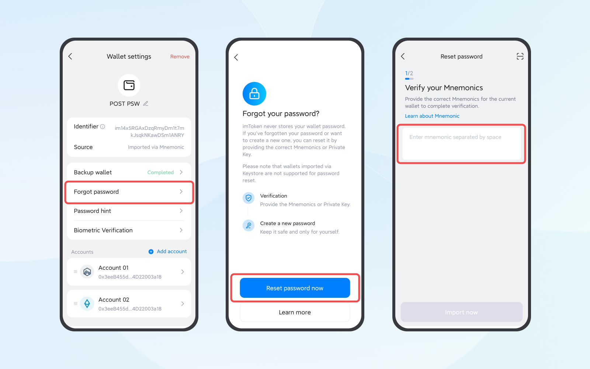

You can attempt to recover your password on imToken by entering common password combinations; there's no limit to the number of attempts. If you're still unable to recover it, please follow the steps below to reset your password.
Note:
- imToken is a decentralized wallet and does not store any user information. If you lose or forget your password, imToken cannot help you retrieve it, you must reset it yourself.
- If your imToken version is below 2.15.3, please click "My Profile" - "About Us" - "Version Update" in the app to upgrade to the latest version before proceeding with the password reset.
How to Reset Your Password
The prerequisite for resetting your password is that you have correctly backed up the wallet’s mnemonic phrase or private key, otherwise, you cannot reset it.
In the imToken wallet, you can import the wallet through a mnemonic phrase, private key, or Keystore. Please find the corresponding tutorial based on the situation of the wallet you need to reset the password for.
Note: If you are not sure how your wallet was imported, you can click "My Profile" - "Manage Wallet" to enter the "Wallet settings" page and check "Source" to confirm.
Wallets Imported through Mnemonic Phrase / Private Key
- In imToken, click on "My Profile" - "Manage wallets"
- Select the wallet for which you want to reset the password
- Click "Forgot Password"
- Select "Reset Password"
- Enter the backed-up mnemonic phrase or private key
- Set a new wallet password
- Click "Submit"

Wallets Imported through Keystore
Wallets imported through Keystore do not support resetting passwords. If you forget the password, you can only keep entering your common password combinations to try to recover it.
Learn more: What should I do If I forget my Keystore password?
Note:
- If you see the message “The Mnemonics/private key you entered do not belong to the current wallet.” when verifying your mnemonic phrase / private key, it means the mnemonic phrase / private key you entered is not the backup for the current wallet. Please check the word order, spelling, and any other mnemonic phrase or private key backups, then enter it again and try resetting the password.
- Please ensure the secure storage of your backed-up mnemonic phrase. The correct way to back it up is using physical media, such as writing it down by hand on a piece of paper or using a imKey HeirBOX Mnemonic Storage. Because these physical media cannot be connected to the internet or transfer information between electronic devices, they can truly save your mnemonic phrase offline.
- If you did not back up the wallet's mnemonic phrase or private key correctly, or if you have lost it, you will not be able to reset the password. Do not remove the wallet or uninstall the imToken app. Otherwise, you may permanently lose access to the wallet and its assets. If you still remember the password, you can continue trying passwords you may have used for this wallet.